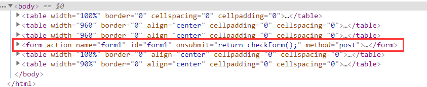
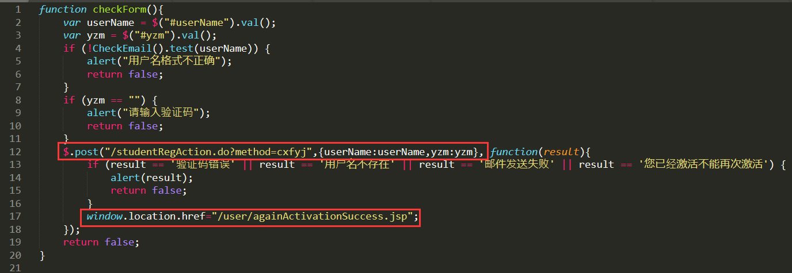
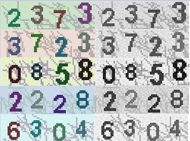
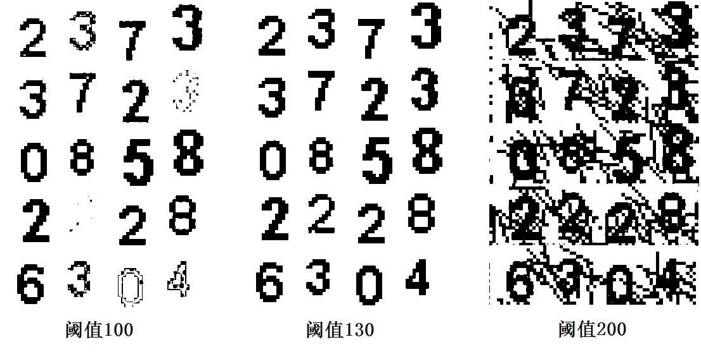
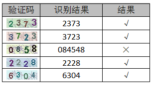

起因
事情的起因是这样的，最近需要在某系统上注册一个账号，结果怎么都收不到邮件，试了有十几次，然后我去打听了一下，所有人都是这样，少则十几次才能收到，多则几十次，便萌生了写脚本自动提交的想法。
分析逻辑
第一步当然要分析逻辑，这也是最重要的一步，好在这个系统比较简单，没一会儿就分析好了。先看一下表单：
两个输入框分别输入邮件和验证码，我们在看下源码：

这个form没有action属性，是通过checkForm方法提交的，我们再来看下checkForm方法：

还有一些代码被我删减掉了，只留下最主要的代码，首先将表单数据post到后台，如果后台的返回body为空串，则跳转到第二个网址，否则提示错误信息。至此我们已经将逻辑分析好了，我们只要模拟这段js代码的逻辑向后台提交数据。
验证码识别
这个系统的验证码图形并不复杂，干扰线不严重，数字整体也没有太大扭曲，所以使用Tesseract就足够了，验证码识别的准确率不需要百分之百但也不能太低，百分之六十以上就不错了。为了提高准确率，我们先要对图片做一些简单的处理。
灰度化处理
第一步是将验证码处理为灰度图片，下图为处理好的例子，左侧为原图像，右侧为灰度图像。

二值化处理
第二步将处理好的灰度图像二值化，二值化的阈值选择可能比较难选择，需要多次试验选择一个较优的阈值，下面为不同阈值对应的二值化图像：

阈值130是一个比较好的选择，阈值100有些数字已经看不清了，200又没能很好的去除干扰线。
Tesseract识别
第三步用Tesseract识别二值化图像就可以了。

5个中对了4个，就结果来说比较满意了。另外，不知您发现没有，它这个验证码每个数字的位置是固定的。。。
补充
代码被我删掉了，我怕铁憨憨把人家系统弄瘫痪。。。